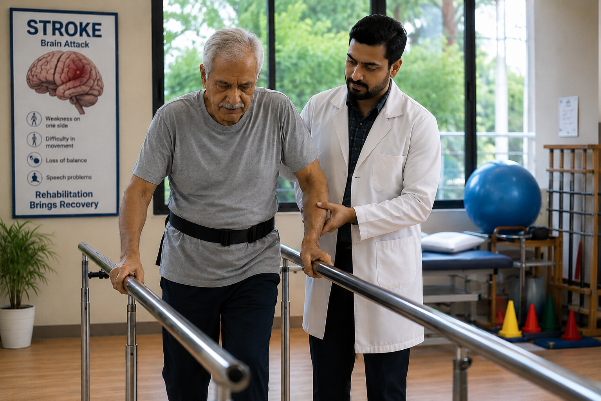

Best Inpatient Rehabilitation Center in Bangalore
Health Vision Physiotherapy and Rehabilitation provides advanced inpatient rehabilitation in Bangalore for stroke recovery, post operative rehabilitation, neurological rehabilitation, orthopedic rehabilitation, spine rehabilitation and geriatric rehabilitation. Our expert rehabilitation team focuses on restoring mobility, balance, strength and functional independence using evidence based physiotherapy programs.

Stroke Rehabilitation
Advanced Neuro Rehabilitation Program
Specialized stroke rehabilitation in Bangalore focused on balance training, gait training, mobility restoration and neurological recovery.

Post Operative Rehabilitation
Post Surgery Physiotherapy Program
Affordable post surgery rehabilitation in Bangalore after TKR, THR, spine surgery, fracture surgery and arthroscopic surgeries.
Senior Care Rehabilitation
Geriatric Physiotherapy Program
Specialized geriatric rehabilitation for elderly patients focusing on mobility improvement, balance training and fall prevention.
Neurological Rehabilitation
Neuro Physiotherapy Program
Advanced neurological rehabilitation for Parkinson’s disease, Bell’s palsy, nerve injuries and neurological disorders.
Spine Rehabilitation
Back & Spine Recovery Program
Specialized spine rehabilitation for slip disc, sciatica, chronic back pain and spinal disorders.
ICU Rehabilitation
Critical Care Recovery Program
Early physiotherapy rehabilitation for ICU patients to improve breathing, strength and mobility recovery.